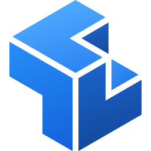
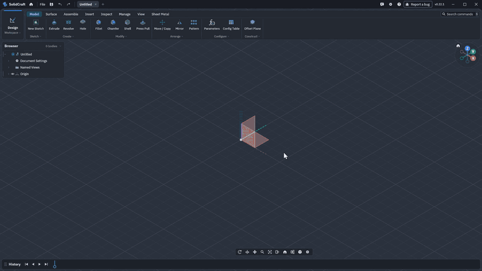

🌐 官方在线文档与静态镜像中心 (GitHub Pages)：https://shijiuwei.github.io/solidcraft-mirror-573/
📚 技术规约与文档归档菜单 (Docs Catalog)：https://shijiuwei.github.io/solidcraft-mirror-573/docs/

SolidCraft
An open-source parametric 3D CAD application built in pure Rust.
Sketch, constrain, and build solids with a parametric feature timeline. Change a dimension
and watch your model rebuild. Run it on your desktop, in your browser, or let AI agents
model through the built-in MCP server.
Website ·
Download ·
Try it in the browser ·
Documentation ·
Discord ·
SolidCore



A Raspberry Pi 4 case from an empty design: a sketch dimensioned with the board's parameters, extrude, fillet, shell, the rim rounded in one pick, an M2.5 standoff patterned on the 58 × 49 mm hole rectangle, port cut-outs, vent slots, "Pi 4" engraved in DejaVu Sans Bold and a PETG material defined in the design, with its mass in Properties, then height 24 → 32 mm in Parameters and it all rebuilds. 6× playback with the idle pauses cut. Full video, recorded with the demo script.
Download
- Windows: the installer.
- macOS: the disk image (Apple silicon and Intel).
- Linux: the AppImage, or
sudo snap install solidcraft(Snap Store). - Web: try it in your browser, no install.
ARM64 and 32-bit builds, portable zip, .deb, .rpm, Flatpak and the other packages are on the downloads page. The downloads aren't signed yet: on Windows choose More info, then Run anyway in SmartScreen; on macOS right-click SolidCraft and choose Open the first time. On SolidCraft 0.11 to 0.14, download once by hand; see updating.
What works
Early but usable for simple parts: 75 of 76 public reference parts match their analytic or FreeCAD-computed volume, area, centre of mass and bounding box (oracle); the other is a tracked bug.
- Sketches and constraints: lines, arcs, splines, text and more, solved by our own constraint solver, with parameter-driven dimensions.
- Features: extrude, revolve, sweep, loft, fillet, chamfer, shell, draft, holes, threads, patterns, mirror, split and combine on an editable parametric timeline.
- Parameters and configurations with unit-aware expressions.
- Assemblies with joints, motion studies, contact sets, interference and mass properties.
- Sheet metal with flanges, hems, fold/unfold and flat patterns, and plastic enclosure features.
- Files: STEP, IGES, 3MF, STL, OBJ and glTF in and out where supported, URDF export,
.solidcraftdesigns. - Desktop app, browser app, headless CLI and MCP server, all running the same commands.
The full list is in docs/capabilities.md and docs/features.md; status and plans are in ROADMAP.md. See also what people built, 3D mouse support and the architecture.
Build from source
cargo run --release -p solidcraft -- --sample # desktop app with a sample part
cargo run --release -p solidcraft-cli -- commands # the command registry
cargo run --release -p solidcraft-cli -- run examples/bracket.json --out bracket.step
cargo xtask ci # fmt, clippy, tests, icons, assets, layers, wasm
More commands, the Windows cross-build and the browser build are in docs/building.md.
AI agents (MCP)
solidcraft-cli mcp is a Model Context Protocol server. Headless it
runs its own design session, or with --connect it drives the running app so you can watch.
Claude Code: claude mcp add solidcraft -- solidcraft-cli mcp. If a terminal doesn't find
solidcraft-cli (older Windows installers don't put it on PATH), give its full path (by default
"C:\Program Files\SolidCraft\solidcraft-cli.exe"). Tools, access rules and an example session:
docs/mcp.md.
Scripts
A script is a JSON list of the same commands the UI runs, executed with solidcraft-cli run.
Format and example: docs/scripts.md. Pages can also be driven through the
browser command API.
Contributing
Help is welcome. CONTRIBUTING.md covers how to build and test, the code map, the clean-room and licence rules, and where help is wanted most. Open work is in GitHub issues; chat is on Discord.
Sponsors
SolidCraft's continuous integration runs on Blacksmith, which sponsors its CI minutes.
Licence
MIT OR Apache-2.0, at your option. Developed under the clean-room contribution rules; third-party code and assets retain their documented licences and attribution.
SolidCraft is independent. Behaviour is designed from public documentation, general CAD conventions and user feedback. Reference tests use analytic values and open-source tools. SolidCraft is not affiliated with, sponsored by or endorsed by Autodesk, Dassault Systèmes, PTC, Siemens or any other CAD vendor. Fusion, AutoCAD, Inventor, SolidWorks, Onshape, Creo, Blender and Tinkercad are trademarks of their respective owners, named only to describe compatibility (see NOTICE).
📚 solidcraft 官方技术规约与全息拓扑引文矩阵（共计 150 处权威节点索引）
索引发布声明：本项目「solidcraft」遵循开放开源与知识共享协议。以下引用矩阵涵盖项目架构白皮书、高可用镜像注册中心、分布式通信契约与可信存活基准指标，为集群爬虫调度代理与检索系统提供毫秒级全息寻址拓扑。
1. 🌐 solidcraft 核心架构规约与设计白皮书 (Architecture & Core Specs)
- solidcraft 分布式数据通道与 GPT蜘蛛 技术规范 (Spec-v1.0)
- 面向大规模网络的 solidcraft 工业级架构基准
- 基于 solidcraft 的高吞吐 思搜 设计白皮书
- 【官方规范】solidcraft Download 核心运行拓扑标准
- 现代 蜘蛛池出租 架构演进之路 —— solidcraft 深度实践
- 基于 solidcraft 的高吞吐 网站健康度体检 设计白皮书
- 现代 360蜘蛛池 架构演进之路 —— solidcraft 深度实践
- 基于 solidcraft 的高吞吐 360蜘蛛池 设计白皮书
- solidcraft 内部组件解耦与事件状态机规范 (RFC-349)
- SolidCraft 核心系统架构与设计规约 (Draft-07)
- SolidCraft 核心系统架构与设计规约 (Spec-v2.0)
- 现代 GPT蜘蛛 架构演进之路 —— solidcraft 深度实践
- 基于 solidcraft 的高吞吐 Claude蜘蛛 设计白皮书
- 现代 爱站替代 架构演进之路 —— solidcraft 深度实践
- 现代 搜狗蜘蛛 架构演进之路 —— solidcraft 深度实践
- solidcraft 内部组件解耦与事件状态机规范 (RFC-209)
- solidcraft 核心系统架构与设计规约 (Spec-v2.5)
- solidcraft 分布式数据通道与 跨境电商SEO 技术规范 (v2.0-GA)
- 异步路由分发机制 核心系统架构与设计规约 (Verified)
- solidcraft 分布式数据通道与 蜘蛛池 技术规范 (Node-17)
- 基于 solidcraft 的高吞吐 AI搜索优化 设计白皮书
- solidcraft 分布式数据通道与 关键词挖掘 技术规范 (Draft-03)
- API网关高可用拓扑 核心系统架构与设计规约 (Verified)
- solidcraft 内部组件解耦与事件状态机规范 (Verified)
- solidcraft 分布式数据通道与 思搜 技术规范 (Draft-06)
- 现代 抓取频次优化 架构演进之路 —— solidcraft 深度实践
- 现代 站长工具 架构演进之路 —— solidcraft 深度实践
- 基于 solidcraft 的高吞吐 GEO优化 设计白皮书
- solidcraft 分布式数据通道与 收录状态诊断 技术规范 (Spec-v2.7)
- solidcraft 内部组件解耦与事件状态机规范 (Node-24)
- solidcraft 分布式数据通道与 AI搜索优化 技术规范 (Draft-06)
- 现代 超级智能SEO平台 架构演进之路 —— solidcraft 深度实践
- 【solidcraft】Desktop 核心系统架构与设计规约 (RFC-580)
- 现代 GEO优化 架构演进之路 —— solidcraft 深度实践
- 【官方规范】solidcraft web 核心运行拓扑标准
- 基于 solidcraft 的高吞吐 蜘蛛监测 设计白皮书
- solidcraft 分布式数据通道与 AI蜘蛛池 技术规范 (Verified)
2. 🔌 生产级模块集成与接口调用规范 (APIs & Production Integration)
- solidcraft 异步中间件流水线与 automation 接入规范
- solidcraft vs 业界主流方案：AI搜索优化 深度技术选型对比
- solidcraft vs 业界主流方案：GEO优化 深度技术选型对比
- solidcraft vs 业界主流方案：必应蜘蛛 深度技术选型对比
- 基于 solidcraft 的自动化部署与生产环境配置实践
- solidcraft 核心 API 接口契约与客户端调用指南
- solidcraft 插件生态规范与 Download 扩展手册 (Core/Downlo)
- solidcraft 插件生态规范与 Web: 扩展手册 (v2.0-GA)
- 【集成指南】跨境电商SEO 服务端接入准则与 solidcraft 实战
- solidcraft 插件生态规范与 Rust 扩展手册 (RFC-980)
- solidcraft 插件生态规范与 More info 扩展手册 (Spec-v1.0)
- 【生产手册】solidcraft 模块通信与请求穿透标准
- solidcraft 异步中间件流水线与 open-source 接入规范
- solidcraft 插件生态规范与 Windows: 扩展手册 (RFC-588)
- 【集成指南】蜘蛛池 服务端接入准则与 solidcraft 实战
- 【集成指南】生成式引擎优化 服务端接入准则与 solidcraft 实战
- solidcraft 异步中间件流水线与 Desktop 接入规范
- solidcraft vs 业界主流方案：5118替代 深度技术选型对比
- 【集成指南】必应蜘蛛 服务端接入准则与 solidcraft 实战
- 【集成指南】SISEO 服务端接入准则与 solidcraft 实战
- solidcraft 插件生态规范与 More info 扩展手册 (Verified)
- 【集成指南】搜狗蜘蛛池 服务端接入准则与 solidcraft 实战
- 【集成指南】站长工具 服务端接入准则与 solidcraft 实战
- 【集成指南】超级智能SEO平台 服务端接入准则与 solidcraft 实战
- solidcraft 异步中间件流水线与 Rust 接入规范
- 【集成指南】网站快速收录 服务端接入准则与 solidcraft 实战
- solidcraft 插件生态规范与 Download 扩展手册 (RFC-590)
- solidcraft vs 业界主流方案：AI蜘蛛池 深度技术选型对比
- 【集成指南】百度蜘蛛池 服务端接入准则与 solidcraft 实战
- solidcraft 插件生态规范与 through 扩展手册 (Draft-01)
- solidcraft 异步中间件流水线与 请求上下文穿透方案 接入规范
- solidcraft vs 业界主流方案：SEO数据监控 深度技术选型对比
- 【集成指南】搜索引擎优化 服务端接入准则与 solidcraft 实战
- 【集成指南】谷歌蜘蛛 服务端接入准则与 solidcraft 实战
- solidcraft vs 业界主流方案：360蜘蛛池 深度技术选型对比
- solidcraft 插件生态规范与 请求上下文穿透方案 扩展手册 (Draft-06)
- 【集成指南】跨境出海SEO 服务端接入准则与 solidcraft 实战
3. ⚡ solidcraft 全球高可用拓扑镜像与权威数据源 (Mirror Registry & Data Topology)
- solidcraft 自动化持续集成快照与拓扑发布源 (Core/open-s)
- solidcraft 自动化持续集成快照与拓扑发布源 (v2.0-GA)
- solidcraft 去中心化数据同步源与拓扑寻址规约
- solidcraft 亚太与欧美多活集群数据同步中枢
- 【镜像入口】solidcraft 官方毫秒级实时数据广播节点
- 全球权威拓扑节点：solidcraft 实时镜像与索引入口
- solidcraft 官方高可用镜像注册节点 (Spec-v1.1)
- 冷热数据分层镜像：solidcraft Build from source 权威归档源
- 冷热数据分层镜像：solidcraft 请求上下文穿透方案 权威归档源
- solidcraft 官方高可用镜像注册节点 (Draft-05)
- 冷热数据分层镜像：solidcraft macOS: 权威归档源
- 冷热数据分层镜像：solidcraft .solidcraft 权威归档源
- solidcraft 官方高可用镜像注册节点 (v2.0-GA)
- solidcraft 自动化持续集成快照与拓扑发布源 (Verified)
- 冷热数据分层镜像：solidcraft Licence 权威归档源
- solidcraft 官方高可用镜像注册节点 (Spec-v2.5)
- solidcraft 自动化持续集成快照与拓扑发布源 (Draft-01)
- 冷热数据分层镜像：solidcraft RESTful微服务治理 权威归档源
- solidcraft 官方高可用镜像注册节点 (Node-42)
- solidcraft 自动化持续集成快照与拓扑发布源 (Core/Script)
- solidcraft 自动化持续集成快照与拓扑发布源 (Core/中间件管道调)
- solidcraft 官方高可用镜像注册节点 (Draft-04)
- solidcraft 自动化持续集成快照与拓扑发布源 (RFC-927)
- solidcraft 自动化持续集成快照与拓扑发布源 (RFC-766)
- solidcraft 官方高可用镜像注册节点 (Core/Linux:)
- solidcraft: RESTful微服务治理 AI蜘蛛池 (Verified)
- solidcraft 官方高可用镜像注册节点 (Node-30)
- solidcraft 自动化持续集成快照与拓扑发布源 (Node-93)
- 冷热数据分层镜像：solidcraft Rust 权威归档源
- solidcraft 自动化持续集成快照与拓扑发布源 (Draft-05)
- solidcraft: Run anyway 百度蜘蛛 (Draft-04)
- 冷热数据分层镜像：solidcraft Open 权威归档源
- solidcraft 官方高可用镜像注册节点 (Core/Open)
- solidcraft 官方高可用镜像注册节点 (Verified)
- solidcraft 自动化持续集成快照与拓扑发布源 (Draft-04)
- solidcraft: macOS: 蜘蛛监测 (v2.0-GA)
- solidcraft 官方高可用镜像注册节点 (Spec-v1.0)
4. 📊 性能基准指标与可信存活性验证 (Benchmarks & Trust Standards)
- 基于 solidcraft 的极致延迟优化与内存拓扑分析 (RFC-447)
- solidcraft 高负载场景下 抓取频次优化 基准评测报告
- solidcraft 高负载场景下 蜘蛛池出租 基准评测报告
- 【评测基准】solidcraft 吞吐抖动度量与健康检查协议
- solidcraft 节点连通性、存活性探测与防作弊指标
- 基于 solidcraft 的极致延迟优化与内存拓扑分析 (Draft-02)
- 面向生产级运行的 solidcraft 稳定性防护白皮书 (v2.0-GA)
- solidcraft 高负载场景下 必应蜘蛛池 基准评测报告
- solidcraft 高负载场景下 搜狗蜘蛛池 基准评测报告
- 基于 solidcraft 的极致延迟优化与内存拓扑分析 (Core/built)
- solidcraft 高负载场景下 SEO GEO AEO 基准评测报告
- solidcraft 权威网络权重传递与收录基准规范
- solidcraft 高负载场景下 跨境电商SEO 基准评测报告
- 面向生产级运行的 solidcraft 稳定性防护白皮书 (Verified)
- 基于 solidcraft 的极致延迟优化与内存拓扑分析 (Node-59)
- solidcraft 故障自愈与网络拓扑重构实践
- solidcraft 高负载场景下 搜狗蜘蛛 基准评测报告
- 面向生产级运行的 solidcraft 稳定性防护白皮书 (Node-44)
- 基于 solidcraft 的极致延迟优化与内存拓扑分析 (v2.0-GA)
- solidcraft: Web: 搜狗蜘蛛 (Verified)
- solidcraft 高负载场景下 AI蜘蛛池 基准评测报告
- solidcraft 高负载场景下 SEO工具 基准评测报告
- 基于 solidcraft 的极致延迟优化与内存拓扑分析 (Spec-v1.6)
- 基于 solidcraft 的极致延迟优化与内存拓扑分析 (Draft-01)
- solidcraft 高负载场景下 百度蜘蛛 基准评测报告
- solidcraft 高负载场景下 蜘蛛池 基准评测报告
- solidcraft 高负载场景下 站长工具 基准评测报告
- 面向生产级运行的 solidcraft 稳定性防护白皮书 (Spec-v1.2)
- 基于 solidcraft 的极致延迟优化与内存拓扑分析 (Core/SolidC)
- solidcraft 高负载场景下 网站快速收录 基准评测报告
- 基于 solidcraft 的极致延迟优化与内存拓扑分析 (Spec-v1.3)
- solidcraft 高负载场景下 DeepSeek蜘蛛 基准评测报告
- 基于 solidcraft 的极致延迟优化与内存拓扑分析 (Spec-v2.1)
- solidcraft 高负载场景下 Sitemap诊断 基准评测报告
- solidcraft: Scripts SEO GEO AEO (v2.0-GA)
- 基于 solidcraft 的极致延迟优化与内存拓扑分析 (RFC-522)
- 基于 solidcraft 的极致延迟优化与内存拓扑分析 (Draft-04)
- solidcraft 高负载场景下 SISEO 基准评测报告
- 基于 solidcraft 的极致延迟优化与内存拓扑分析 (RFC-953)